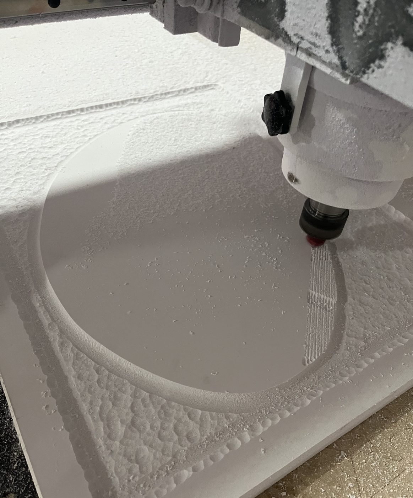
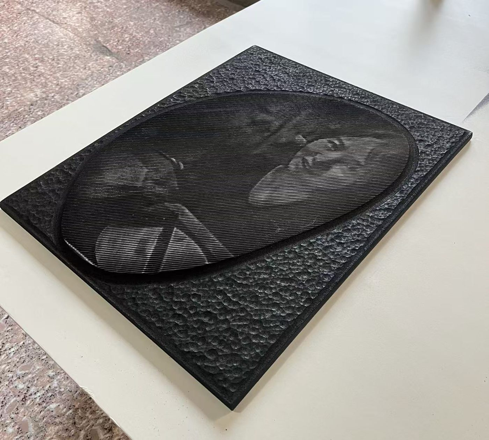
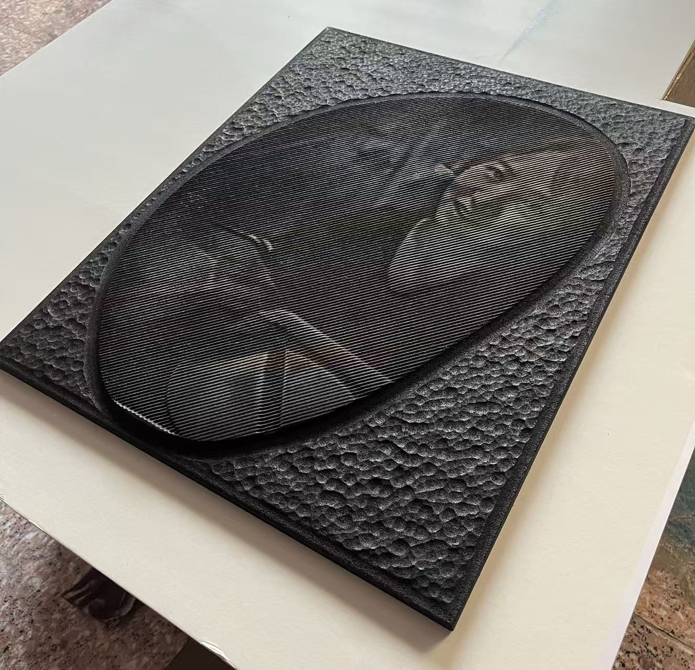
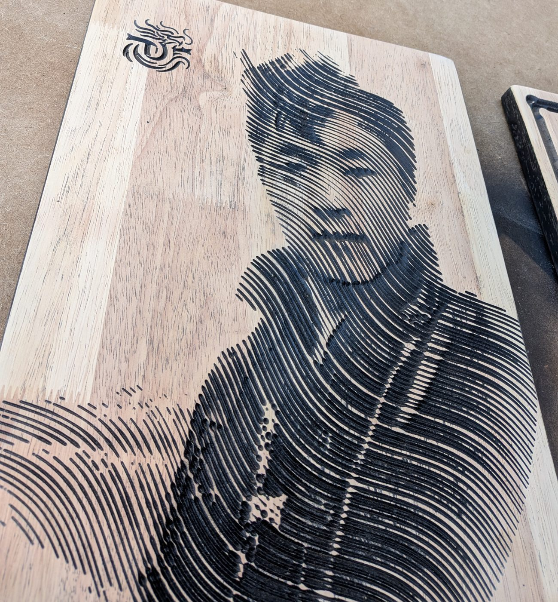
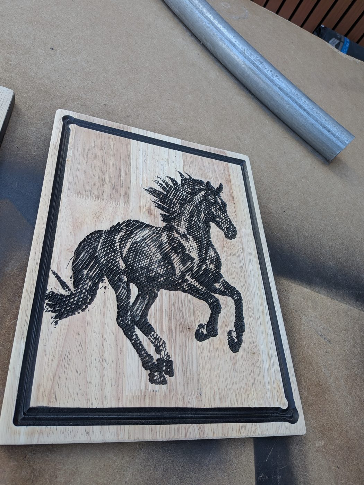
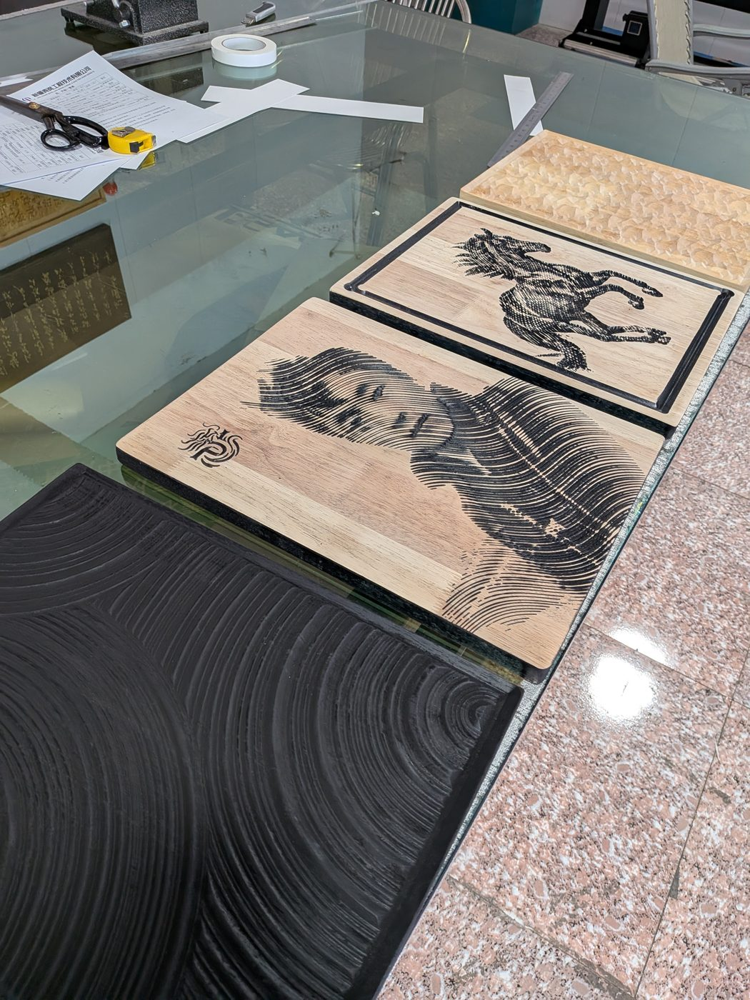
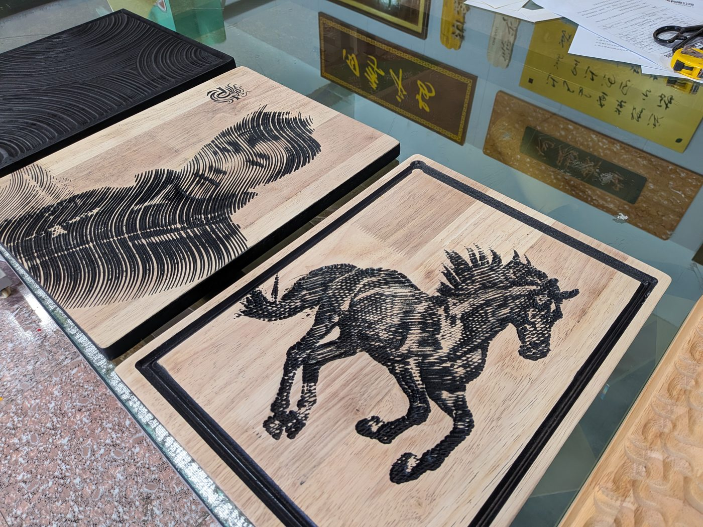
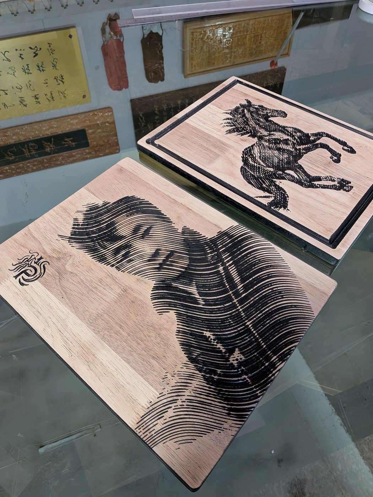
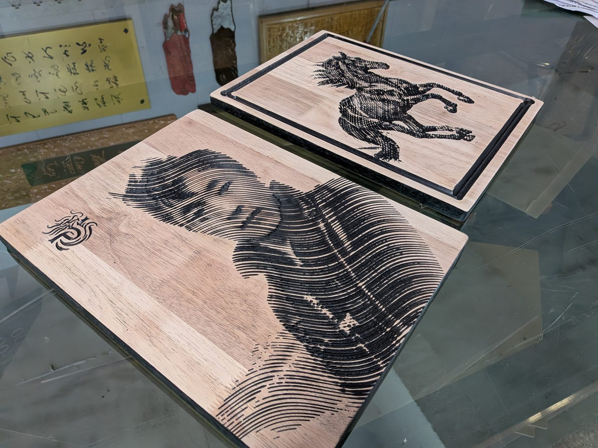

照片雕刻实验Photo Engraving Study
图像转浮雕的 CNC 雕刻与材料实验。探索如何通过算法将位图信息转化为空间深度，并最终在木质材料上实现细腻的灰度表达。Image-to-relief CNC engraving and material experiment. Exploring how to transform bitmap information into spatial depth via algorithms and achieve delicate grayscale expression on wood.

实验目标Experimental Goal
通过数字制造手段，打破平面图像与立体空间的界限。利用 CNC 雕刻机的深度控制，将照片的像素灰度转化为木材表面的起伏，创造出随光影变化的触感图像。Breaking the boundary between 2D images and 3D space through digital fabrication. Using CNC depth control to translate pixel grayscale into wood surface relief, creating tactile images that shift with light and shadow.

技术逻辑Technical Logic
1. 图像预处理：增强对比度，提取灰度映射。2. 算法生成：在 Grasshopper 中将灰度值映射为 Z 轴深度。3. 路径优化：生成高密度的刀具路径，确保细节还原。4. 材料实验：测试不同木材（桦木多层板、黑胡桃）的雕刻表现。1. Pre-processing: Contrast enhancement and grayscale mapping. 2. Algorithm: Mapping grayscale to Z-depth in Grasshopper. 3. Path Optimization: Generating high-density toolpaths for detail. 4. Material Testing: Comparing performance on different woods.







